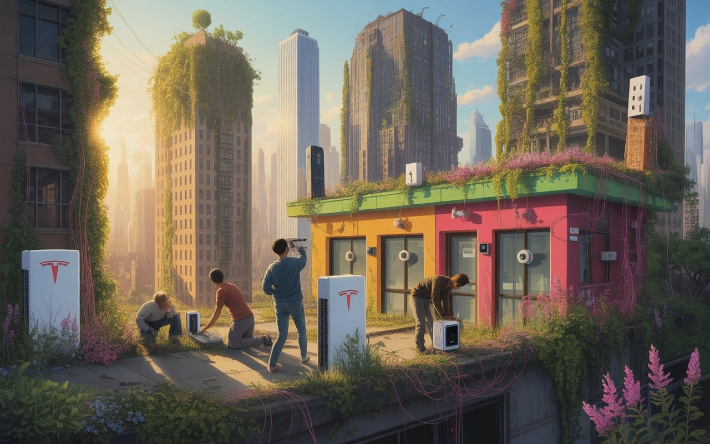

Scrapyard Futures in the Digital Ruins
In 2050, as megacorps crumble, communities thrive by repurposing abandoned tech. Neighborhoods run on salvaged Powerwalls, Ring networks retooled for healthcare. Welcome to technological archaeology, where yesterday's e-waste is tomorrow's lifeline.


According to ageless wisdom,
"Imagine a world where we are no longer just consumers, but cultivators."

This week's essay stems from my fascination with technological archaeology, the growing practice of communities salvaging and repurposing abandoned tech infrastructure. The catalyst for this piece was observing how various neighborhoods are reclaiming orphaned technology - from Tesla Powerwalls to Ring networks - and reimagining them with entirely new social protocols.
By exploring this phenomenon, I hope to initiate a necessary dialogue about our relationship with technology in a post-corporate future. This piece invites readers to consider how communities might thrive not by waiting for new solutions, but by cleverly repurposing the digital ruins left behind by failed tech ventures and reimagining them with community values at the center.
Beyond the Collapse
The Art of Digital Archaeology
What if I told you that economic panic isn't random chaos but carefully orchestrated theater, with your social media feed serving as the psychological battlefield where institutional players wage war for your financial decisions?
🌶️ Courtesy of your friendly neighborhood, Khayyam

CryptocurrencyDigital or virtual currency that uses cryptography for security.In the Lexicon →Here's what nobody tells you about infrastructure collapse: it's not dramatic, it's bureaucratic. When WeWork imploded, they abandoned thousands of "smart" office buildings with integrated IoT sensors blinking futilely in the dark. When cryptocurrency mining operations went belly-up, they fled from warehouses full of perfectly good GPUs and cooling systems that still hummed with potential.

SiliconSemiconductor material used in computer chip manufacturingIn the Lexicon →The clever communities now practice what I call "technological archaeology"—systematically identifying and claiming this orphaned infrastructure before it gets scrapped for metals. In the skeletal remains of former auto plants, a housing co-op in Detroit now running their entire neighborhood grid off abandoned Tesla Powerwalls from a failed solar installation company. They didn't ask permission; they showed up with bolt cutters and engineering degrees.
But here's the twist that makes this actually interesting: they're not just salvaging hardware, they're reverse-engineering the social protocols. How do you turn a Ring doorbell network designed for suburban paranoia into a tool for community care? You hack the firmware to detect health emergencies instead of "suspicious activity." Same sensors, completely different social logic.
Biomimetic Infrastructure: When Buildings Think Like Forests

Most architects designing "green buildings" still think like engineers—linear inputs and outputs. But actual ecosystems operate in complex feedback loops. They're distributed computers made of carbon and water.
BiomimeticImitating biological systems or processes in technology design.In the Lexicon →Real biomimetic design means buildings that communicate through root networks—literally. Mycorrhizal fiber optic cables that transfer both data and nutrients. Walls embedded with algae bioreactors that consume CO2 while exhaling electricity. Rooftop gardens that aren't decorative but functional—serving as heat exchangers, air filters, and distributed food production.
The breakthrough insight? Buildings become organisms that grow smarter over time. Imagine structures that learn optimal energy flows through machine learning, but the "machine" is a hybrid of silicon chips and bacterial computing. The building's mood changes with the seasons, not because of programming, but because it's literally alive.
Council AI: Democracy That Actually Works at Scale
Here's where most people's brains break: they assume artificial intelligence must exist as centralized and hierarchical because that's how Silicon Valley built it. But what if we designed AI systems from the ground up to facilitate collective decision-making instead of replacing it?
Picture this: Every community decision flows through "argument mapping algorithms"—AI that doesn't make decisions but rather clarifies the actual points of disagreement, identifies hidden assumptions, and surfaces creative synthesis options nobody had considered.
The system works like this: Community members submit perspectives through voice interfaces (because typing excludes people). The AI identifies logical structures, maps emotional patterns, and generates "possibility spaces"—visual representations of potential outcomes that help people think beyond their initial positions.
The ingenious part? The AI learns on successful conflict resolution from thousands of communities, but it's locally controlled. Each neighborhood can fork the codebase and adapt it to their specific cultural patterns. Amish communities might emphasize consensus and tradition. Urban housing co-ops might prioritize efficiency and innovation. Both use the same underlying framework but with completely different value weightings.
Value Systems That Don't Suck
Traditional economics measures the wrong things entirely. GDP goes up when you cut down a forest AND when you plant one—it's measuring activity, not value creation. The regenerative economy runs on completely different metrics.
Here's how it actually works: Communities issue local currencies backed by ecological services rather than debt. You earn "carbon credits" by capturing atmospheric carbon through biochar production. You earn "care credits" by bathing an elder, teaching a child to read, or mediating a neighborhood dispute. You earn "innovation credits" by contributing to open-source designs that other communities can use.
The genius is in the exchange rates—they're algorithmically adjusted based on community needs. During harvest season, food production credits are worth less and care credits worth more. During crisis response, coordination credits spike in value.
But the real breakthrough is "temporal arbitrage"—the system accounts for long-term thinking. Plant a food forest and receive credits over 20 years as it matures. Design a water filtration system that lasts 50 years and the credits compound annually. The economics finally align with ecological reality instead of quarterly profit cycles.

Sousveillance Networks: Watching the Watchers Watch Themselves
The surveillance state created something they didn't anticipate: a generation that grew up assuming everything was recorded anyway. These kids aren't concerned about privacy—they're concerned about control over their data.
The smart communities develop "transparency cooperatives" which are mutual surveillance networks where everyone watches everyone, but the data belongs to the community rather than corporations. Every police interaction gets recorded from multiple angles. Every corporate executive's movements through public space get tracked and published in real-time.
The psychological effect is profound. When the powerful know they're being watched as intensively as they watch others, behavior changes rapidly. Corporate malfeasance becomes practically impossible when every boardroom conversation might be leaked. Political corruption dies when every meeting with lobbyists is automatically livestreamed.
Metabolic Circularity: The Real Closed Loop
Forget recycling—that's linear thinking in green clothing. Metabolic circularity means designing systems where waste is literally impossible because everything is food for something else.
Picture a neighborhood where human waste gets processed through biogas digesters that power the community kitchen, while the liquid effluent feeds aquaponics systems growing food for the same community. Food scraps get fed to insect farms producing protein and fertilizer. Dead plant matter gets pyrolyzed into biochar that captures carbon while improving soil.
The fascinating part is that information flows follow the same pattern. Community data gets processed through local AI systems that optimize resource flows, predict maintenance needs, and identify collaboration opportunities. The "waste" data—all the stuff the algorithms don't use immediately—gets fed into research cooperatives studying resilience patterns across communities.
It's Not Utopia, It's Evolution
Here's what the solarpunk romantics won't tell you: decentralized systems create new forms of conflict that are often more intense than what they replace. When power is distributed, so is the capacity for both cooperation and oppression.
OptimizationImproving efficiency by eliminating redundancy and bufferIn the Lexicon →You get community splits over resource allocation. You get generational conflicts between people who want to preserve traditional decision-making and people pushing for algorithmic optimization. You get ideological conflicts between communities that prioritize individual autonomy versus collective coordination.
The difference is that these conflicts happen at human scale where they can actually be resolved through relationship rather than legal warfare. When your neighbor disagrees with you about water management, you have to figure out how to live together. When a corporation disagrees with you, they just sue until you can't afford to fight.
The Transition Strategies: Parasitic Transformation
The shift doesn't happen through revolution or reform—it happens through what evolutionary biologists call "symbiogenesis." New organisms evolving by incorporating existing organisms as components.
Innovative communities are infiltrate and transform existing systems from within. They join HOAs and convert suburban neighborhoods into eco-villages. They buy failed shopping malls and convert them into community manufacturing hubs. They acquire bankrupt hospitals and convert them into health cooperatives focused on prevention rather than treatment.
The strategy is always the same: provide better services than the existing system while building alternative infrastructure. When the old system finally collapses, the replacement is already operating and proven.
The Dark Arts for Good

Here's the uncomfortable truth: the techniques the tech giants used to hack human attention work just as well for beneficial goals. Gamification, network effects, behavioral nudges, addiction mechanics—these are tools that can serve any value system.
The difference is transparency and consent. Instead of manipulating people into consumption, these systems manipulate people into ecological restoration, community care, and skill development. But they're still manipulation, just with different goals.
The regenerative communities create "ethical addiction" systems—making sustainable behaviors genuinely more satisfying than destructive ones. Composting becomes a social game with status rewards. Energy conservation gets competitive leaderboards. Mutual aid networks provide the dopamine hits that social media used to provide.
The real revolution isn't technological—it's cognitive. We're rewiring the fundamental reward systems that drive human behavior. The broligarchs accidentally taught us how to hack consciousness itself. Now we're turning those weapons against the systems that created them.

The question isn't whether this future is possible. The infrastructure exists, the techniques are proven, and the motivation is overwhelming. The question is whether we can implement it fast enough to matter before the existing system's death spiral takes too much of the biosphere with it.
Most people are still thinking about reform. We're talking about speciation—the emergence of genuinely different forms of human organization that can out-compete the existing models on their own terms. Darwin in action, but consciously directed toward outcomes that don't suck.
Don't miss the weekly roundup of articles and videos from the week in the form of these Pearls of Wisdom. Click to listen in and learn about tomorrow, today.


Sign up now to read the post and get access to the full library of posts for subscribers only.
 🌶️ iamkhayyam
🌶️ iamkhayyamKhayyam Wakil is a technological archaeologist and systems theorist exploring the social afterlives of abandoned infrastructure. Through his field research in post-corporate communities, he documents how yesterday's proprietary technologies are being reimagined as tomorrow's commons. When he's not saving lives, he's showing others how to jailbreak the future from technology's past.